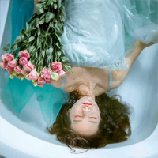
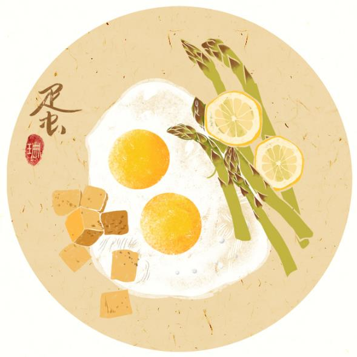
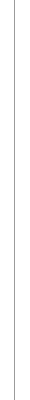

|
| [街区] 热 点 内 容…… |
[街区] 热 门 话 题……
|
|||||
|  |  |
|
文|王卜 民宿火了。新进入者希望自己正站在“下一个莫干山”的土地 上，而莫干山镇上的每一个人，都学会了“风口”这个词。 选自ONE文艺生活，第十放映室 对于性，我们又该如何认知？ Trouble Ling的日记 爱情斯德哥尔摩 |
 |
你的论文写完了吗？ 余忆童稚时 |
|
| 拍照是一件美丽的事…… | 唯有爱与美食不可辜负…… | |||||
| 手作温暖生活…… | 鲜衣怒马少年时…… | |||||
[街区] 布 客 推 荐…… |
|||
童年的声音 文|刘墉，选自新书《不疯魔，不成活》 |
我的童年是在台北市温州街与云和街之间度过的，那是个很特殊的地方，好似卡萨布兰卡或伊斯 坦布尔，处在多种文明交汇处，撞击出异样的火花。 |
||
月是故乡明 文|季羡林 |
每个人都有故乡，人人的故乡都有个月亮。人人都爱自己故乡的月亮。事情大概就是这个样子。 |
||
不死鸟 文|三毛，选自《三毛文集》 |
一年多前，有份刊物嘱我写稿，题目已经指定了出来：“如果你只有三个月的寿命，你将会去坐什 么事？”我想了很久，一直没有去答这份考卷。 |
||
合欢树 文|史铁生，选自《我与地坛》 |
十岁那年，我在一次作文比赛中得到了第一。母亲那时候还年轻，急着跟我说她自己，说她小时候 的作文作得还要好，老师甚至不相信那么好的文章会是她写的。 |
||
安静的日子 文|周国平，选自《岁月与性情》 |
1997年10月，在婚礼上，主持人问红看上了我什么，红讲了两个月前她驾车出的一次车祸，我们两 人险些丧生，但我丝毫没有怪她，却说了一句箴言：“小事可以互相责备，大事必须同心协力。” |
||
苦夏 文|冯骥才，选自《冯骥才随笔集》 |
这一日，终于撂下扇子，来自天上干燥清爽的风，忽吹得我衣飞举，并从袖口和裤管钻进来，把周 身滑溜溜的抚动。我惊讶的看着阳光下依旧夺目的风景…… |
||
回答 文|北岛，选自《北岛诗集》 |
卑鄙是卑鄙者的通行证，高尚是高尚者的墓志铭。 |
||
波西米亚楼 文|严歌苓 |
波西米亚在英文中也是个形容词，比如我的一个画家朋友向我推荐一处住所时用种赞许的口气说： “那幢楼你我这类人会喜欢的——特‘波西米亚’！”…… |
||
秋风秋雨秋煞人 文|冰心 |
秋雨不住滴沥滴沥的下着，窗外的梧桐和芭蕉叶子一声声的响 着，做出十分的秋意。墨绿色的窗 帘，垂得低低的。灯光之下，我便坐在窗前书桌旁边，寂 寂无声的看着书。 |
||
三十年的重量 文|余秋雨，选自《文化苦旅》 |
时至岁末，要我参加的多种社会文化活动突然壅塞在一起，因此我也变得“重要”起来，一位朋友 甚至夸张地说，他几乎能从报纸的新闻上排出我最近的日程表。难道真是这样了？…… |
||
|
||||||||||||||||
| 读 书 温 暖 生 活 |